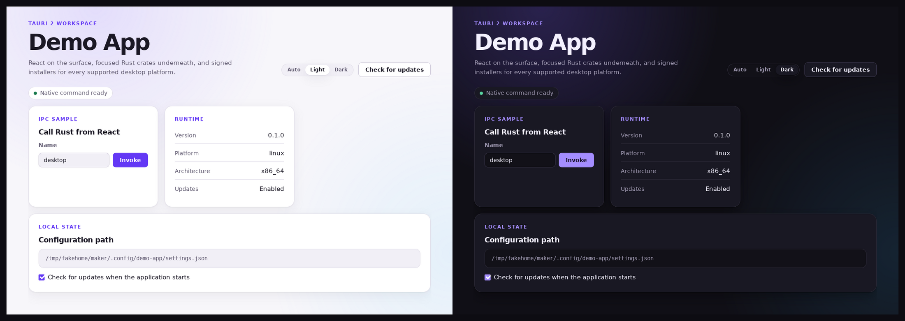

签名自动更新
一条命令生成签名密钥、把公钥写进配置、并打印出要上传的 secret。 更新清单托管在 GitHub Releases 上，不需要你运维任何服务器。
一个 Tauri 2 工作区：React 负责界面，底下是职责清晰的两个 Rust crate，签名自动更新和跨平台发布流水线都已经接好。
$ npx create-tauri-workspace my-app --identifier dev.you.myapp --repo you/my-app
生成器零运行时依赖。你交付的应用里也不含任何 JavaScript 运行时。

一条命令生成签名密钥、把公钥写进配置、并打印出要上传的 secret。 更新清单托管在 GitHub Releases 上，不需要你运维任何服务器。
每一个颜色、圆角、间距都是 token。亮暗两套都定义好了，窗口里自带 主题切换。
crates/core 承载可测试的逻辑，永不依赖 Tauri；
crates/app 负责把它接到桌面外壳上。要加新 crate，
得先有真正的理由。
预检任务会在任何平台开始构建前先校验 tag、版本号和签名密钥。 产物落成草稿 Release，由你确认后再发布。
单实例启动、窗口位置记忆、结构化日志、设置持久化，以及错误边界 ——渲染出错也不会只剩一个白窗口。
一份 AGENTS.md，由 CLAUDE.md 引入，
外加一个 Claude Code 和 Codex 都能读的技能。
$ npx create-tauri-workspace my-app \
--identifier dev.you.myapp \
--repo you/my-app
identifier 要用你自己控制的反向域名。没有域名就用
io.github.你的用户名.my-app。
$ cd my-app $ bun run dev
$ bun run updater:init --repo you/my-app
备份好它打印出来的私钥。这是唯一能给已安装的副本推送更新的 东西，丢了就再也补不回来。
$ bun run release:check $ git tag v0.1.0 && git push origin v0.1.0
macOS、Windows、Linux 并行构建，产物上传到草稿 Release。
两个工具读的是同一种 SKILL.md 格式，只是目录不同。
安装命令会同时写入两处。
$ npx create-tauri-workspace skill install # 仅当前项目 $ npx create-tauri-workspace skill install --global # 所有项目
| 工具 | 安装位置 |
|---|---|
| Claude Code | .claude/skills/desktop-app/ |
| Codex | .agents/skills/desktop-app/ |
Claude Code 也可以按插件安装：
/plugin marketplace add erchoc/create-tauri-workspace
然后 /plugin install desktop-app@create-tauri-workspace。
装好之后，说一句"帮我做个桌面应用"就够了。技能知道要挑 identifier、 要验证构建、要把业务逻辑挡在命令处理器外面、要用设计 token， 也知道在某件事需要付费账号时提前告诉你。
它们很容易被搞混，而搞混它们是第一次发桌面应用翻车最常见的原因。
| 签名 | 签什么 | 不做会怎样 | 成本 |
|---|---|---|---|
| 更新签名 | 更新包 | 所有平台都无法自动更新 | 免费 |
| Apple Developer ID | .app 与 .dmg |
macOS 根本打不开 | Apple 开发者计划 |
| Windows 代码签名 | .exe 安装包 |
SmartScreen 拦截告警 | 证书颁发机构 |
macOS 会告诉每一个下载你应用的人"文件已损坏"，并拒绝打开。 Windows 弹出警告，用户可以点掉。Linux 不受影响。
更新会替换整个应用包。在 macOS 上，没签名的替换体启动不起来， 所以只有更新签名是不够的。
发布流水线会跳过每一个 secret 为空的签名步骤，所以没配置凭据的 仓库仍然能产出未签名的构建，而不是直接报错。
完整的分发指南 列出了每一个 secret 以及去哪里获取。
create-tauri-app 让你自由选择技术栈的每一部分，
到此为止。这个项目替你把选择做完了，并补上了你本来要手写的部分：
crate 边界、签名更新、设计 token 体系、发布预检，以及给 AI
工具的规范。
bun run updater:init 之前，更新是
关着的。没有签名密钥时更新插件根本不会注册，界面会隐藏更新入口，
而不是提供一个自己无法校验的安装包。